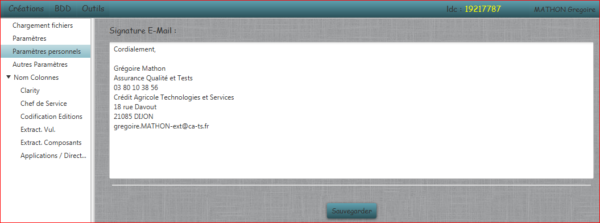

Paramètres Personnels
Permet de modifier les paramètres personnels à chaque utilisateur de l'application :

- Signatures E-Mail : Ajoute la signature à la fin des mails envoyés par l'application.
Tous ces paramètres sont sauvegardés dans un fichier portant le nom de l'utilisateur à la racine de l'application.